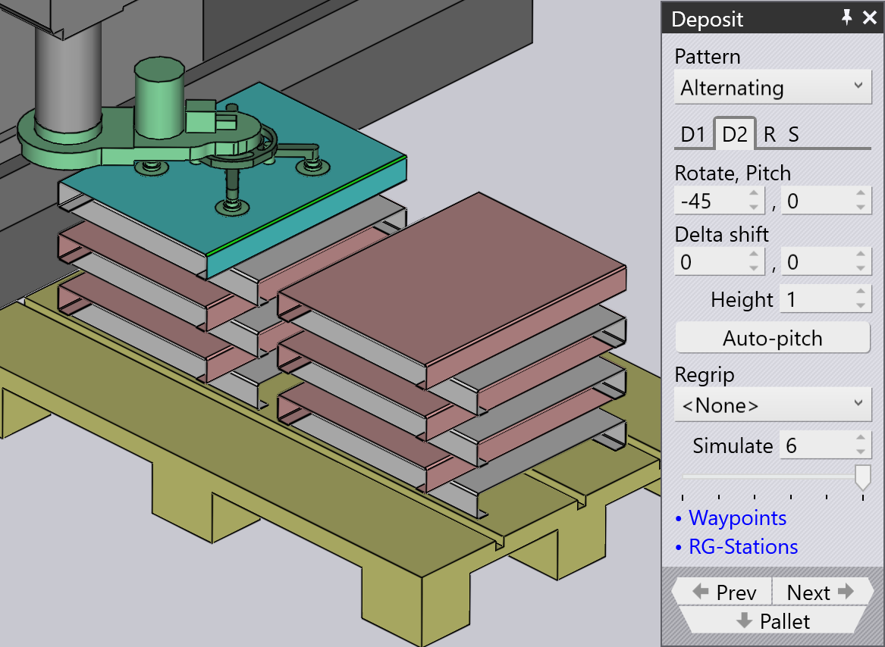

Typer av avsättningsmönster
Simple Grid
Mönstret Simple Grid är det vanligaste och staplar helt enkelt delar i ett rektangulärt rutnät på pallen.
När vi använder positionen Simple Grid är endast en avsättningsposition D1 tillgänglig som standard.

Weave
Mönstret Weave är användbart med långa och tunna delar. Delarna i D2-lagren placeras 90° från delarna i D1-lagret som visas bredvid.


-
Inställningen Weave styr antalet delar som staplas sida vid sida i varje lager av flätan.
-
Gap är gapet mellan var och en av dessa delar inom flätan
-
Grid-inställningarna på fliken Repeat kan sedan användas för att upprepa hela flätstapeln flera gånger på pallen. I det här exemplet upprepas flätstapeln två gånger (2 kolumner, 1 rad).
-
Inställningen Gap (Z,X) på fliken Repeat används när flätan upprepas och specificerar steget mellan flätlagren.
Alternating
Mönstret Alternating är det mest flexibla. I detta mönster kan du styra orienteringen, vändningen och den relativa förskjutningen av varje alternerande lager.
Alternativt mönster ger en mer stabil och även kompakt stapling av delar.
När vi använder alternativt mönster är avsättningspositionerna D1 och D2 tillsammans med Regrip R1 tillgängliga som standard.
| Justera värdena för Delta shift i D1, D2 och lägg till Regrip för att låsa delarna till varandra. |

Alternating Batch
Mönstret Alternating Batch liknar alternativt mönster, men med möjligheten att stapla komponenter i satser och alternera lager.
Batch shift används för att flytta delar till och från Z- och X-axlarna inom en sats.
Batch count används för att definiera antalet komponenter per sats per avsättning D1, som kan variera från 1 till 50. I exemplet nedan är det inställt på 5.
Delta shift används för att flytta en hel avsättning D1 bestående av satser till och från Z- och X-axlarna.


Använd alternativet layers på fliken Repeat grid (R) för att definiera antalet satser per avsättning. I exemplet nedan är det inställt på 2.

Drop to Basket
Detta mönster används för att släppa små delar i en uppsamlingskorg med hjälp av mekanisk gripare.

Conveyor
Mönstret Conveyor används för att avsätta delar på en deltransportör. Detta alternativ är väsentligt när långa tunna delar avsätts på transportören.
| När mekanisk käftgripare används för medelstora delar kommer alla andra mönstertyper att inaktiveras för val, förutom transportörmönster. |

Inclined
Mönstret Inclined används för att stapla delar vertikalt mot en vägg (eller en pall som har en sidovägg).
| Detta mönster är inte alltid tillgängligt. Delen måste vara tillräckligt stor för att detta ska vara genomförbart. För små delar kan roboten inte nå ner tillräckligt lågt för att stapla delen mot väggen. |

Inclined pair
Denna mönstertyp liknar mycket mönstret Alternating, förutom att delarna avsätts vertikalt som ett par.
En ytterligare Regrip introduceras i antingen D1 eller D2 avsättning för att göra ett par.
Auto-pitch bestämmer lutningsvinkeln för stapeln automatiskt.
Inställningen Pitch används för att justera lutningsvinkeln för staplingen och värden för Delta shift används för att flytta delen i X- och R-axlarna för att göra en mer kompakt stapel.


Manual
Mönstret Manual används för att placera varje lager av delar i en något annorlunda orientering.

-
Använd knappen Add för att lägga till en ny del ovanpå det översta lagret.
-
Använd navigeringsknapparna bredvid fliken Dn för att gå till föregående eller nästa lager.
-
Inställningarna Delta shift, Rotate och Pitch kan användas för att justera delen så att den sitter bättre på delen nedan. Du kan också använda Delta shift och klicka på Auto-pitch för att be TecZone Bend beräkna en optimal lutningsvinkel.
-
Använd knappen Remove för att ta bort den översta delen.
-
Efter att en manuell stapel har skapats kan du använda inställningarna på fliken Repeat (R) för att upprepa samma stapel över pallen. Bilden ovan visar samma stapel upprepas för 2 kolumner, 1 rad med ett gap på 250 mm mellan kolumnerna.
-
Inställningarna på fliken Sequence (S) kan användas för att kontrollera om delarna staplas by layer eller by pile. Om du använder stapel-för-stapel-stapling färdigställs alla delar i den första stapeln innan vi börjar på den andra stapeln.